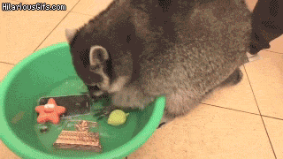
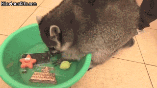
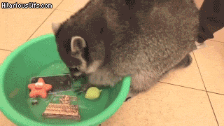

이미지 관련 태그
* src 속성 alt 속성
* alt
- 사진의 경로가 잘못되었거나 이미지를 제대로 표현할수 없는 경우 대체 텍스트의 용도 - 시각장애인들을 위한 스크린리더 (화면낭독기)에서 이미지를 읽어주는 설명문구
고정길이단위 (px) == 기본값 : 화면 사이즈가 조정이 되도 이미지의 크기는 그대로 유지하는 방법

가변길이단위 (%) : 화면사이즈 혹은 부모요소 사이즈에따라 이미지의 크기도 바뀌게하는 방법
미디어 관련 태그
오디오 관련 태그
비디오 관련 태그


 
